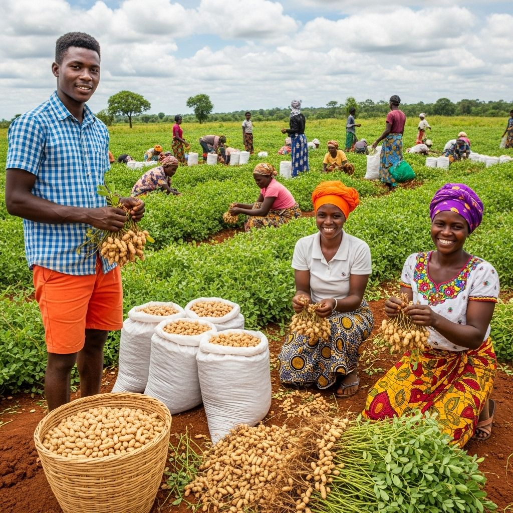

Foire agricole de Tsévié 2024
AGRI-TOGO a participé à la foire agricole de Tabligbo. Merci à tous les visiteurs ! Cette édition a été un véritable succès grâce à votre présence et à votre intérêt pour notre travail.
Notre stand a été animé par de nombreux échanges autour de l'agriculture togolaise. Vos retours positifs sur la qualité de nos produits nous encouragent à poursuivre nos efforts pour promouvoir une agriculture moderne, responsable et durable.
Toute l'équipe remercie chaleureusement les visiteurs, partenaires et producteurs qui ont contribué à cette réussite.